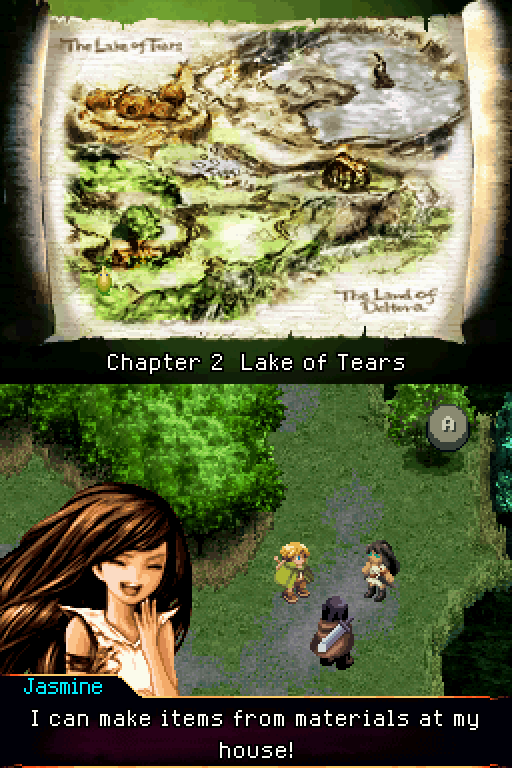
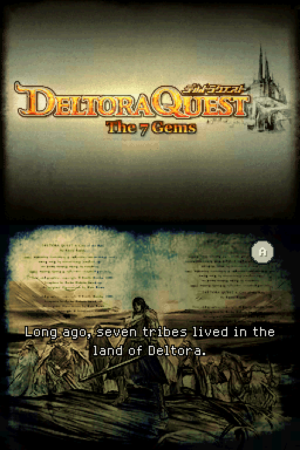
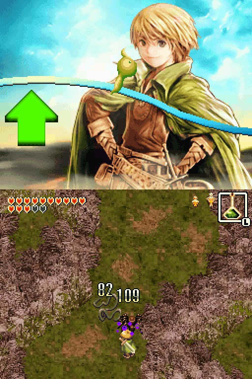
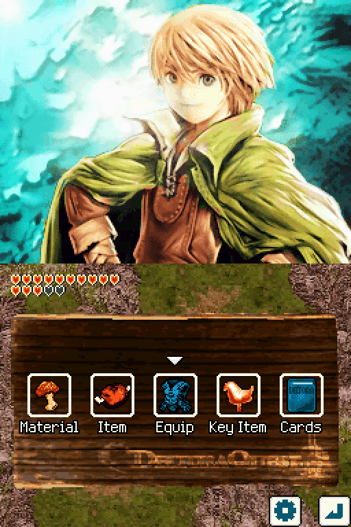
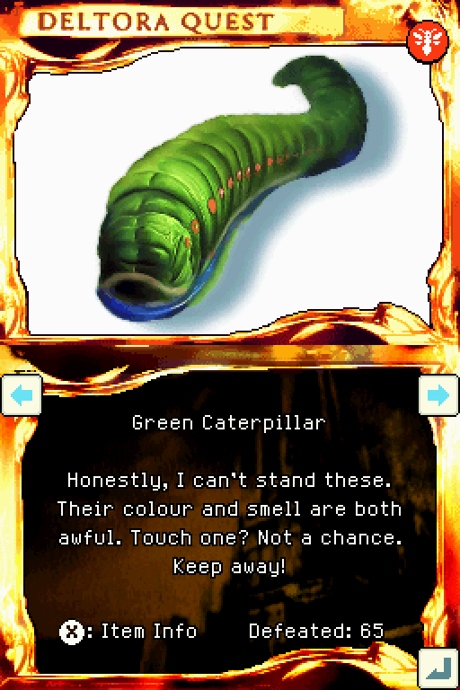
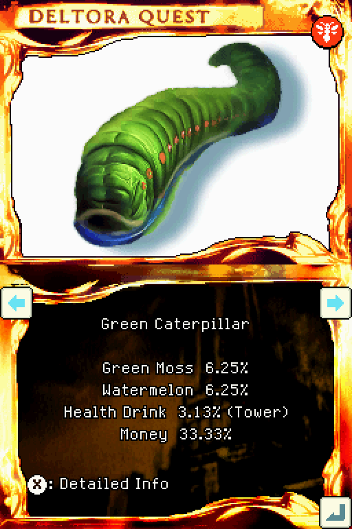
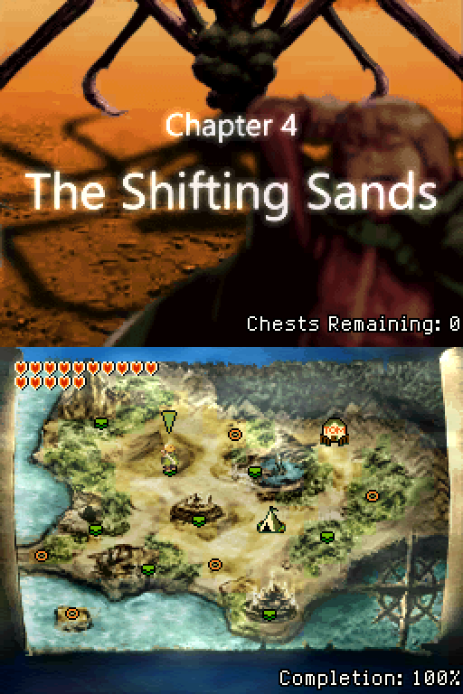
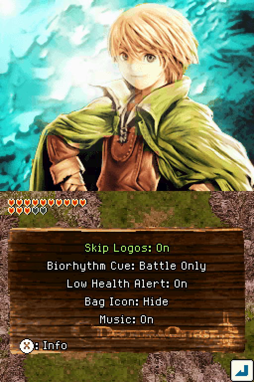
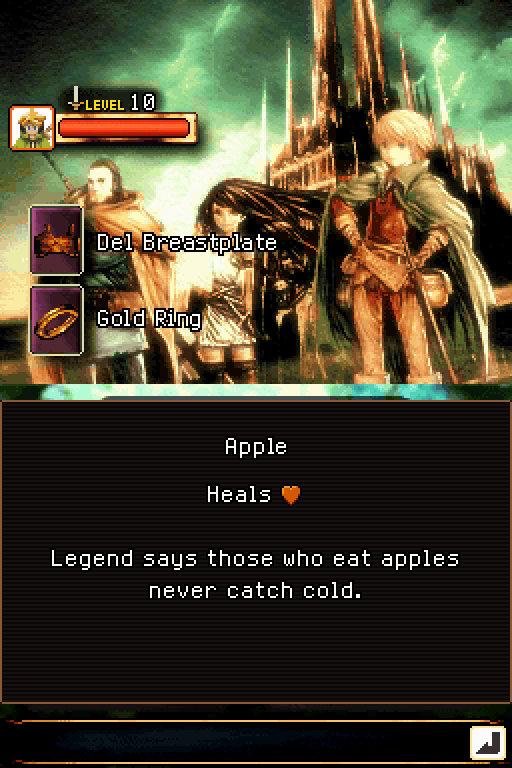

Deltora DS Patcher
Everything the patch changes in Deltora Quest: Nanatsu no Houseki, besides the translation and the button controls.
Translation
The whole game is in English.
- The story, menus, items, cards, notes, help and credits. The only text left in Japanese is the developers' own debug menus.
- Names follow Emily Rodda's books.
A new English font
- Variable width, hand-drawn in the style of the game's own.
- Two-letter glyphs, so long item and card names fit the game's fixed-length name fields.
Redrawn graphics
- The title's subtitle, The 7 Gems, in the original fiery style.
- The chapter and stage title cards.
- Yes/No labels, menu labels and name plates.
- Special move titles, the game over line and the title screen's copyright line.


Controls
Everything that needed the stylus now also works with the D-pad and buttons. The stylus still works everywhere. A couple of small minigames still utilize only the stylus, or the DS microphone.
In the field
The original game is played with the stylus: tap to walk, tap an enemy to attack, and shout into the microphone for a special move. Every one of these now has a button.
| Button | What it does |
|---|---|
| D-pad | Walk, sliding along walls |
| B held | Run |
| Y | Attack the nearest enemy |
| X held | Charge, then release to dash-attack, where the game allows dash attacks |
| R held | Special move, at a biorhythm peak, in place of shouting into the microphone |
| L | Use the item in the item square |
| Select | Switch to the next item |
| A | Talk, or open a chest |
| Start | Open the bag |
- Switching items: in the original game, the item in the item square couldn't be changed at all. Select now brings the next item into the square, so items can be swapped mid-fight.
- Talking: A talks to whoever Lief is facing. When two people are in reach, the more useful one wins, such as the Grand Farm's farmer over his dog.
- Walking: some map collisions were adjusted so diagonal corridors don't snag.
Menus
- A D-pad cursor in the bag, the item lists, the card book, the shop, the smith, the mixing room and the options.
- L and R switch tabs.
- Every bag icon has a label.
Camp
- X saves, Y changes hero and A chooses.
Everywhere else
- The world map: the D-pad moves between places.
- Most minigames can be played with the buttons instead of just the stylus.
- B on the file screen returns to the title menu.


Card book
Each enemy's card now says much more about it.
- Item Info (X) lists the enemy's drops with their chances.
- Detailed Info gives its HP and where it's found, with the Tower of Illusion's variants marked.
- Kill counts are kept for every enemy.
- After the game is cleared, an unfound card shows where to find it.
- The hexagon only animates when a new card was added.
Card drops
In the original game every card was pure luck. Now each enemy's kill count decides it.
- Guaranteed cards: from the 10th defeat of an enemy, it always drops its card until you have it. Before then, it can still drop at its normal chance.
- Gold cards: in the original game, when an enemy dropped a card you already owned, 1 time in 128 it was the gold version instead. Now no gold card is left to chance: defeat 50 of an enemy, with its card owned, and its card turns gold.
- Once you have a card, it shows how many of that enemy you've defeated, so you can see how close its gold version is.
Item drops
- Rare crafting materials and gear drop at least 6.25% of the time, so none takes hours of farming.
- The Poncho drops at least 12.5% of the time.


Map and completion
The game keeps track of how much of it you've found.
World map
- After a chapter is cleared, its place shows how many chests are left there.
- Once the game is cleared, the touch screen shows the completion percentage.
File screen
- Each file shows its play time and completion percentage.
- In the Tower of Illusion, it shows the floor, such as "Tower of Illusion 40F".
How completion is counted
Each part counts in proportion, and the total rounds down.
| Part | Weight |
|---|---|
| Main chapters and the ending | 50% |
| Cards | 15% |
| Items, equipment, recipes, key items and chests | 5% each |
| Clearing the Tower of Illusion | 5% |
| Clearing Mokeet's Mansion | 5% |

Quality of life
Smaller changes that take the waiting and guessing out of the game.
Options page
- A gear button in the bag opens it. X explains each option.
- Skip the opening logos.
- The biorhythm voice cue: always, only in battle, or off.
- The low-health alarm, the bag icon on the field, and music on or off.
Saving
- No fixed "Saving…" wait.
- The campfires after the Tower of Illusion's boss floors now allow saving.
Jasmine's mixing room
- No stirring needed, and results stay on screen until A.
- After the game is cleared, a signpost lists the four gear recipes that no recipe item teaches.
Grand Farm
- You choose the crop.
- Fields grow every hour you're away instead of every day, and are ruined after three days instead of two.
- A signpost explains this.
Elsewhere
- Lief's Final Slash attack plays faster than before.
- The smith shows how many of each material you have.
- Item descriptions have room for longer text.
- The secret sound test shows which track is playing.
- The first clear announces the Tower of Illusion, and the final screen offers a return to the title.


Fixes
Bugs in the original game, fixed.
Graphics
- In Mokeet's Mansion's auto-scrolling rooms, Lief stays fully on screen.
- Returning from a save point no longer leaves Lief stuck on a wall in Mokeet's Mansion.
Gameplay
- Pumpkin Soup no longer resets a hero's biorhythm to the bottom when it wears off.
- With protective boots on, Lief can attack on spikes and similar floors. Previously, the game would not allow attacking even with these boots being worn.
- The low-health alarm stops after three beeps, and repeats now and then.